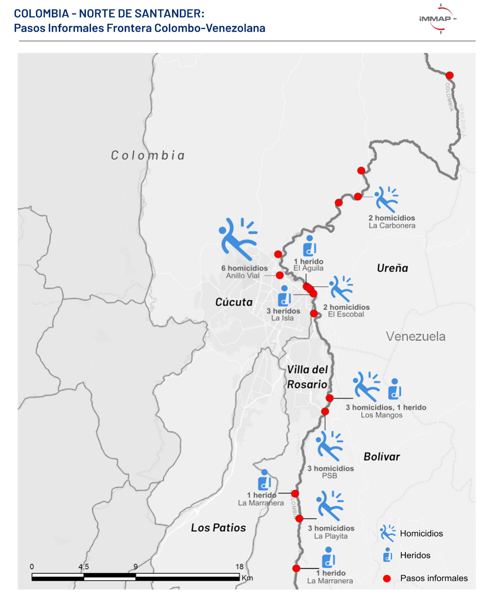

Antecedentes
Evolución de la situación de caminantes en Norte de Santander y Santander
-
Evaluaciones previas
OCHA:
Septiembre 2018
457 encuestas
DTM – OIM - IMMAP:
Marzo - Abril 2019
2,538 encuestas – 243 encuestas población en tránsito en Santanderes
IMMAP – ONGIH:
Octubre 2019
890 encuestas -
Procedencia de los/las caminantes
La mayor proporción de caminantes provienen de Aragua y Carabobo, seguidos de la región Capital, Centro-Occidental y Andina.
Se destaca que la región fronteriza presenta menores proporciones de migrantes a pesar de que su densidad poblacional es elevada en comparación a la región centro-occidental.× -
Variación en los lugares de procedencia 2018-2019
Se observa un crecimiento en la proporción de caminantes provenientes de Miranda, Aragua, Yaracuy y Barinas entre Agosto 2018 y Octubre 2019
Se observa un incremento menor en el Táchira, Apure, Cojedes y Sucre. Mientras que Trujillo, Lara, Carabobo, Guárico y Monagas ha disminuido significativamente el flujo.
×
Destino de los/as migrantes peatonales
Otros países
México: 2
España: 1
Metodología
Equipo de Recolección de Datos
La conformación del equipo se efectuó en coordinación con el Grupo de Investigación Altos Estudios de Frontera (ALEF) de USB y la Escuela de Economía de la UIS.
Selección de estudiantes recién egresados, con experiencia en levantamiento de información, conocimiento en trabajo social e investigación social, económica y estadística.
Puntos de Recolección
- Punto de atención de la Cruz Roja
- Albergue Samaritan’s
- Refugio Marta Duque
- Hogar de paso Vanesa
- Fundación Entre Dos Tierras
- Albergue Shalon
- Parque del Agua
Contraste de resultados con información secundaria
Cruz Roja, PMA y Samaritan's Purse, nos entregaron datos para poder contrastar nuestra información y obtener información secundaria que nos sirve de comparación
Quienes son los Migrantes
Necesidades insatisfechas
Octubre 2019
74%
Alimentos
44%
Salud
27%
Educación
La proporción en salud no es un indicador de las restricciones al acceso en dicho sector porque no todas las personas perciben servicios de forma continua
10%
Reunificación Familiar
9%
Persecusión Política
Los datos sugieren que una mayor proporción de caminantes tienen familiares en sus lugares de destino. El PIP-TT y asistencia en transporte sería aplicable para esta población.
Ingreso Declarado por Trochas
19%
Agosto 2018
OCHA
32%
Octubre 2019
iMMAP
Se redujo la proporción de personas con presunto ingreso por trochas, pero se incrementó la proporción de ingreso declarado por trochas así como el volumen en términos absolutos.
Presunta trocha indica las personas que declararon entrar por un puente y no cuenta con los documentos necesarios para el ingreso al país.

Ingreso de los caminantes
-
Riesgos de Protección.
Una alta proporción de caminantes ingresa por trochas exponiéndose riesgos de protección.
-
16 Homicidios
El Monitor de OCHA en el primer semestre de 2019 registra al menos 16 homicidios en las trochas y sus alrededores por el accionar de Grupos Armados.
-
Competencia Territorial
El ingreso irregular genera ingresos para los Grupos Armados y fomenta su competencia territorial.
-
Documentos Vigentes
43% de los encuestados posee un documento vigente que les permite entrar a Colombia. De los encuestados solo 73 poseen un pasaporte venezolano y 22 lo tienen vigente.
Datos a tener en Cuenta
-
No existe un sistema de conteo y monitoreo del flujo de caminantes.
-
Los registros de beneficiarios son las únicas variables proxy confiables del flujo.
-
El PMA y CRC son las organizaciones con mayor atención a caminantes.
-
Los registros de PMA y CRC demuestran una marcada tendencia creciente en la atención a caminantes.
Características según
PMA-CRC
62%
Hombres
38%
Mujeres
26%
Niños y Niñas
7%
Mujeres gestantes
Los registros de beneficiarios son las únicas fuentes que permiten contabilizar la proporción de menores de edad. Las caracterizaciones sólo se realizan a adultos.
Se observa un incremento en la proporción de mujeres, de madres lactantes y gestantes y adultos mayores de 34 años.
La atención de PMA prioriza a las mujeres. El conteo de gestantes beneficiarias obtenido de PMA no es comparable con las encuestas.
Pirámide poblacional Agosto 2018 - OCHA
Porcentajes (%)
Pirámide poblacional Octubre 2019 - IMMAP
Porcentajes (%)
El mayor incremento se produjo en mujeres mayores a 34 años y hombres mayores de 44
Una mayor proporción de caminantes son esperados por familiares venezolanos. Se estaría presentando un proceso de reunificación familiar que podría explicar el incremento de la proporción de mujeres, madres gestantes y lactantes, y adultos mayores.
Existe un incremento en la proporción de familias viajando. La elevada proporción de hijos indica que existen madres y padres con sus hijos y sin sus parejas.
Existe una caída en la voluntad de retorno a Venezuela, posiblemente explicada por la mayor incidencia de necesidades básicas insatisfechas y los procesos de reunificación familiar fuera del país.
La alta proporción de caminantes con educación secundaria podría estar explicada por su mayor juventud. Caminantes 30,3 años vs 43,2 de colombianos.
Respuesta a caminantes
Norte de Santander y Santander
Albergues
- Capacidad Total: Alrededor de 1.825
- Cobertura GIFMM: 38% del total Samaritan’s Purse
- Albergues privados: 62% del total
Incumplimiento de estándares esfera
Alimentación
- Entregas en septiembre:
Kits alimenticios 19.304
Comidas calientes 18.620 - Cobertura PMA:
Kits alimenticios 100%
Comidas calientes 58%
* Fundaciones en Bucaramanga entregan cerca de 7.800 comidas calientes. No hay certeza de que todas sean provistas a caminantes. - Atención en salud: CRC ofrece consultas médicas generales
Necesidades Sectoriales
La migración de los caminantes parece ser de mediano y largo plazo
Se requiere atención a sus necesidades
Las condiciones generales de salud han mejorado al mostrar cambios significativos en la percepción de estado regular (44% a 37%) y en buen estado (32% a 52%).
La enfermedad con mayor incidencia es el Asma al representar el 13% de la población. Esto supone un riesgo en la ruta por el Páramo de Berlín.
Se observa un crecimiento en la proporción de caminantes que consumen los diversos grupos de alimentos y una marcada reducción en el consumo de azúcares (gaseosas y bebidas artificiales). La base de la alimentación continúan los cereales.
Un 79% de los caminantes consumen menos de 5 grupos alimentarios. A pesar de consumir diversos grupos, puede existir falta de variedad en estos.
Menos del 40% de los caminantes consumen todos los días de la semana desayuno, almuerzo y cena. Cerca de un 12% de ellos deja de consumir alguna de estas comidas. Se confirma que existen deficiencias en cuanto a la frecuencia del consumo de alimentos y su variedad.
La mayor brecha en consumo de alimentos se produce entre hombres y mujeres en el consumo de almuerzos.
Se observa una mayor respuesta a las necesidades de WASH debido a al aumento en el acceso a duchas, elementos de higiene y agua potable.
Se observa una marcada reducción de la población que pernocta en las calles, y un incremento significativo en el arriendo de lugares como hostales y habitaciones.
La cobertura de los albergues sólo cobija al 31% de los caminantes.
Socios de la Iniciativa
Contactenos
Puede Escribirnos al correo contacto@immap.org
Si quiere descargar los microdatos puede ingresar a los repositorios HDX de iMMAP y OCHA